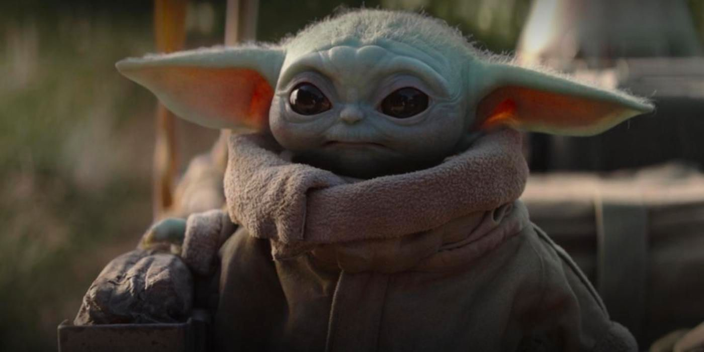

L'histoire se déroule 5 ans après Le Retour du Jedi et 25 ans avant Le Réveil de la Force, et raconte les aventures d'un mercenaire mandalorien au-delà des territoires contrôlés par la Nouvelle République.
Après la chute de l'Empire et la fondation de la Nouvelle République, le métier de chasseur de primes ne paie plus. Le Mandalorien, connu pour être un des plus redoutables, accepte un contrat non officiel. Il s'agit pour lui, moyennant une prime élevée, de retrouver et de ramener à ses commanditaires un enfant de la même espèce que Yoda. En cours de mission, le Mandalorien découvre que, malgré son très jeune âge (50 ans pour une espèce dont la durée de vie est de plusieurs siècles), l'enfant maîtrise déjà la Force. Après avoir remis le « bébé "Yoda" » à son client, un vieil homme entouré de nombreux Stormtroopers de l'Empire, et touché la prime, le Mandalorien se ravise, et revient sauver l'enfant. Il doit ensuite prendre la fuite avec lui, poursuivi par tout ce que la galaxie compte de chasseurs de primes lancés à leurs trousses…
De nature taciturne et solitaire, le mandalorien offre tout de même son aide à ceux qui en ont besoin, quitte à y laisser sa propre vie.
Non ! Son petit compagnon vert, par contre, semble bel et bien pouvoir utiliser la force au coût d'un grand effort.
Son compagnon n'a pas de nom et ressemble étrangement à yoda.
Cinq ans après la chute de l'Empire Galactique, un chasseur de primes mandalorien remet sa dernière proie à Greef Karga sur la planète Nevarro. Puis il accepte une mission d'un client énigmatique avec des connexions impériales. On lui demande de traquer et de capturer une cible sans nom agée de cinquante ans. Alors que le client est indifférent au bien-être de la cible, son collègue le Dr Pershing insiste pour que la cible soit ramenée vivante. Le Mandalorien reçoit un acompte d'une seule barre d'acier Beskar, sacrée pour son peuple. Il l'emmène dans une enclave mandalorienne secrète où une armurière l'utilise pour lui en confectionner une épaulette. En arrivant sur la planète Alvara-7, dernier emplacement signalé par la cible, le Mandalorian est aidé par un paysan nommé Kuiil. Fatigué du chaos que les chasseurs de primes apportent dans la région, Kuiil le conduit à l'emplacement de la cible, ne demandant que la paix. Entrant dans le camp éloigné et fortement défendu, le Mandalorien fait équipe à contrecœur avec le droïde IG-11 lui-même chasseur de primes pour nettoyer le camp et trouver l'objectif - un enfant de l'espèce de Yoda. Lorsque IG-11 tente de tuer le nourrisson conformément à ses ordres, le Mandalorien tire et détruit la tête du droïde, gardant l'enfant en vie.
En retournant sur son vaisseau avec l'Enfant, le Mandalorien combat et tue les chasseurs de primes rivaux qui le prennent en embuscade. Arrivé à son vaissseau, il le trouve dépouillé par des Jawas pour des pièces et les confronte violemment. Mais quand il attaque leur "Sandcrawler", les Jawas l'assomment et le font tomber du toit. Le lendemain, Kuiil l'aide à localiser les Jawas et à négocier le retour des composants de son navire. Le Mandalorien accepte de récupérer l'œuf d'un Mudhorn ressemblant à un rhinocéros en échange des pièces volées. Il entre dans la grotte du Mudhorn mais est violemment éjecté par la bête en colère, qui l'attaque à plusieurs reprises, endommageant son armure. Alors que le Mudhorn se précipite pour l'achever, l'enfant utilise la Force pour faire léviter la bête, permettant au Mandalorien surpris de le poignarder et de le tuer. Il récupère l'œuf du Mudhorn et l'emmène chez les Jawas, qui le mangent. Une fois le commerce terminé, le Mandalorien et Kuiil réparent le navire, permettant au Mandalorien de quitter la planète avec l'Enfant.
L'Enfant est livré au Client sur Nevarro et le Mandalorien récupère la prime de 20 barres d'acier Beskar. De manière inhabituelle, le Mandalorien pose des questions sur les plans du client pour l'enfant, mais on lui dit que cela ne le concerne pas. De retour dans l'enclave mandalorienne, il remplace son armure endommagée et fait améliorer ses armes par l'armurier, qui forge une cuirasse complète. Le Mandalorien accepte un nouveau travail de Greef Karga et prépare son vaisseau à partir. Avant de partir, se sentant coupable, il se retourne pour attaquer la base du Client. En tuant de nombreux Stormtroopers impériaux, il sauve l'enfant du laboratoire du Dr Pershing où il était étudié, mais ne tue pas le médecin. Sur le chemin du retour vers son vaisseau, le Mandalorien est pris en embuscade par d'autres chasseurs de primes et Greef Karga, qui lui demandent de remettre l'enfant. Il refuse et une fusillade éclate. En infériorité numérique et acculé, le Mandalorien est capable de s'échapper lorsque d'autres Mandaloriens arrivent de l'enclave, attaquant les chasseurs de primes et lui permettant d'atteindre son vaisseau avec l'Enfant.
En arrivant sur la planète peu peuplée Sorgan, le Mandalorien rencontre l'ancienne soldat de choc rebelle devenu mercenaire Cara Dune. Après une brève bagarre, Dune explique qu'elle se cache après avoir pris une "retraite anticipée" et demande au Mandalorien de partir. Pendant qu'il prépare son vaisseau, deux pêcheurs désespérés s'approchent, lui proposant de l'embaucher pour chasser une bande de pillards klatooniens. Il accepte le travail en échange d'un logement, en utilisant leurs crédits pour obtenir l'aide de Dune. Au village, ils sont hébergés par Omera, une mère veuve. Le Mandalorien lui confie que personne ne l'a vu sans son casque depuis son enfance, lorsque sa tribu l'a accueilli comme orphelin. Bien qu'ils aient découvert que les pillards ont un AT-ST impérial, les villageois refusent de partir, alors le Mandalorien et Dune les entraînent à se défendre. Ils provoquent les raiders la nuit, Dune attirant l'AT-ST dans un piège pour que le Mandalorien le fasse exploser,forçant les autres raiders à fuir. Avec la paix rétablie, le Mandalorien prévoit de laisser l'Enfant dans le village, mais un chasseur de primes de la Guilde le retrouve et est tué par Dune. Réalisant que ni le village ni l'Enfant ne seraient en sécurité, le Mandalorien part avec l'Enfant.
Le Mandalorien bat un chasseur de primes lors d'un combat spatial. Il fait atterrir son navire endommagé sur un quai de réparation à proximité, géré par Peli Motto à Mos Eisley sur Tatooine. Il cherche du travail dans une cantina (celle là même où Luke Skywalker et Obi-Wan Kenobi ont rencontré Han Solo et Chewbacca) pour payer les réparations, rencontrant l'aspirant chasseur de primes Toro Calican, qui suit le mercenaire d'élite et l'assassin Fennec Shand. Calican doit attraper Shand pour rejoindre la guilde, et le Mandalorien accepte d'aider quand Calican propose de le laisser garder l'argent. Ils capturent Shand dans le désert, mais elle détruit l'un de leurs speeder bike, alors le Mandalorian va chercher un dewback qu'ils ont rencontrés. Alors que Calican garde Shand, elle lui dit que le Mandalorien a trahi la guilde, ce qui rend sa prime plus importante que la sienne. Shand propose d'aider Calican à capturer la Mandalorienne s'il la libère, mais il lui tire dessus à la place. Calican part au quai de réparation, prenant Motto et l'enfant en otage. Le Mandalorien arrive, utilise une fusée pour désorienter Calican et le tue. Il prend l'argent de Calican pour payer Motto pour les réparations, la remerciant avant de quitter Tatooine. Dans le désert, une mystérieuse silhouette s'approche du corps de Shand.
Le Mandalorien contacte son ancien partenaire Ran pour du travail. Ran lui souhaite la bienvenue dans sa station spatiale et l'informe qu'il a besoin de son vaisseau pour un travail de cinq hommes. Il est rejoint par l'ancien tireur d'élite impérial Mayfeld, l'homme fort Dévaronien Burg, le pilote droïde Q9-0 et la femme Twi'lek Xi'an pour une mission de sauvetage du frère de Xi'an Qin, prisonnier de la Nouvelle République. Après avoir infiltré le vaisseau-prison, ils se battent contre des droïdes de sécurité et se rendent dans la salle de contrôle où un soldat de la Nouvelle République déclenche une balise de sécurité avant d'être tué par Xi'an. L'équipage sauve Qin mais double le Mandalorian et l'enferme. Il s'échappe et bat chaque membre d'équipage l'un après l'autre, puis capture Qin. Q9-0 retrouve l'Enfant après avoir déchiffré la transmission archivée de Greef Karga, mais est abattu par le Mandalorien avant qu'il ne puisse lui faire du mal. Le Mandalorien livre Qin à Ran et part avec son paiement. Ran envoit immédiatement un chasseur pour tuer le Mandalorian, mais découvre que la balise de la Nouvelle République avait été placée sur Qin, conduisant un trio d'X-wing de la république à la station de Ran qui est rapidement détruite. Dans la scène finale, Mayfeld, Burg et Xi'an sont enfermés dans une cellule de la prison, épargnés par le Mandalorien.
Le Mandalorien reçoit un message de Greef Karga, dont la ville a été envahie par les troupes impériales dirigées par le Client. Karga propose que le Mandalorien utilise l'Enfant comme appât afin de tuer le Client et de libérer la ville. En retour, Karga mettra les choses au point avec la Guilde, ce qui permettrait au Mandalorien et à l'Enfant de vivre en paix. Sentant un piège, le Mandalorien recrute Cara Dune et Kuiil pour l'aider. Kuill emporte IG-11 reconstruit et reprogrammé. Ils rencontrent Karga et ses associés, mais sont attaqués la nuit par des Mynocks. Karga est mortellement blessé, mais l'enfant utilise la Force pour guérir sa blessure. En retour, Karga tire sur ses associés et avoue son plan initial de tuer le Mandalorien et d'amener l'enfant au client. Karga va essayer de prétendre que Dune a capturé le Mandalorien, tandis que Kuiil retourne avec l'enfant au vaisseau. Alors que le client reçoit le groupe, il a un appel du Moff Gideon, dont les troupes ouvrent le feu sur le bâtiment, tuant le Client et sa garde. Gédéon arrive avec un bataillon de Stormtroopers complet et se vante que l'Enfant sera bientôt en sa possession. Dans le désert, deux soldats scouts traquent et tuent Kuiil avant de capturer l'enfant.
Alors que les deux scouts retournent à la ville, ils sont rejoints par IG-11, qui les neutralisent et récupère l'enfant avant de prendre un des motospeeders et de foncer en ville. En ville, Moff Gideon pose un ultimatum au petit groupe de mercenaires. Il connait et révèle les identités de chacun, dont le Mandalorien : Din Djarin. Ce dernier explique alors son passé : qu'il fut un orphelin sauvé par les mandaloriens du clan Death Watch durant la Guerre des Clones et adopta leur credo, devenant lui-même l'un des leurs. Grâce à l'arrivée de IG-11, Cara et Din arrive à gagner du temps pour s'enfuir mais le Mandalorien est blessé gravement. Alors que Greef et Dune partent avec l'enfant dans les égouts, IG le soigne, respectant la promesse de ne pas retirer son casque devant un être vivant, le droïde ne se considérant pas comme vivant. Après avoir rejoint le petit groupe dans les égouts, ils retrouvent l'armurière en train de fondre les armures vides des mandaloriens morts ou partis. Elle donne alors à Din son symbole de clan et un jetpack en beskar. Continuant leur fuite dans les égouts, ils se préparent à tomber dans un guet-apens impérial mais IG-11 décide de se sacrifier. Il active alors son protocole d'autodestruction afin de dégager la voie pour le reste du groupe. Libre dans les plaines de cendres, le groupe est finalement rejoint par Gideon qui les harcèle depuis son chasseur TIE. Le Mandalorien utilise alors son Jetpack afin d'atteindre le Chasseur impérial et de le détruire avec des explosifs. Alors que Gideon s'écrase, Din décide de partir à la recherche du peuple de l'enfant tandis que Greef et Cara retournent en ville. Tandis que le vaisseau mandalorien quitte les cieux de Nevaron, Moff Gideon sort de la carcasse de son TIE avec à la main le Sabre Noir, sabre laser ayant appartenu a l'un des premier mandalorien ayant été recruté dans l’ordre des Jedis et symbole d’unification du clan Death Watch et de tous les autres clans mandaloriens.